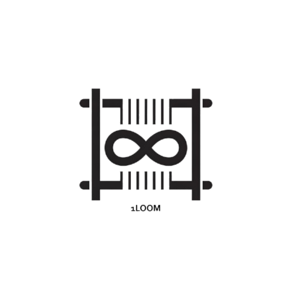

1Loom brings together a suite of powerful tools, platforms, and communities—woven into one future-focused ecosystem.
SDKs, APIs, and utilities that empower developers to build faster and better.
Real-time messaging that feels like WhatsApp, but with the power of 1Loom’s ecosystem integration.
We believe in giving back. Explore our open-source projects and join the community shaping the future.
We’re just getting started. Stay tuned for more platforms, ideas, and innovations coming out of the loom.
Social
A micro-blogging platform like Twitter—designed to connect, share, and spark meaningful conversations.